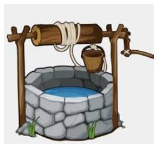

|
“如说修行”网上佛学院 逆转衰老炼夹脊（回光返照养生法） 张杏春 常操此心，退藏于夹脊之窍，守而不离。
一、夹脊一窍，逆转衰老之气古代养生家把延缓和逆转衰老的方法叫“添油续命法”，而添油须明添油窍，续命须知续命处。何处是添油续命窍呢？前辈们在实践中发现，人体膻中、天目、泥丸、夹脊、命门、丹田、海底等七个关键穴位，是聚集人体元气的重要穴位。其中，夹脊一窍又是关键之关键。夹脊窍在中医经络学中，名为心俞（shù，同“腧”），在第七胸椎两侧一寸半处，是心气出入的门户。而心主神明，为五脏六腑之大主，故夹脊一穴，与五脏六腑相关，可见夹脊一穴非同一般。
为了验证这一点，本人进行了数十次气机震动传感内炼，发现气震现象在人体任何部位都可发生，但从脑中发出的震动，仅幅射到头部。从下丹田气穴发出的震动，仅幅射到腹部。唯有从夹脊双关中发出的震动，才能幅射到全身上下左右；在突然一震的同时，整个人体内外形成一个气旋，而这个气旋的中心，正在夹脊之中。由此可见，夹脊一窍在沟通天人二气，摄取先天之气，逆转人体衰老方面，具有特殊的作用和意义。 锻炼方法：主要是双目微闭，内视内观背部第七胸椎两侧的夹脊双关点。人体上下内外元气精气必然交汇于此，当交汇谐振时，又必然发生共振。象启动电器开关一样，全身突然一震，百脉在大震中同时开合，这就是天人合发之景。玄关洞开之验，在这突然一震的一瞬间，自然真气进入人体，施化己身，这就是采取先天一气至简至易至神至妙的捷径！如此天天练，夜夜震，次次采，不断以先天能量来补充自身元气的耗损，还怕老得快吗？！至此，我已和盘托出了夹脊双关的全部奥妙，请不要小视，它可是抗衰延命之法宝！特别是老年人，不要丧失信心，只要及时下手锻炼，同样可以推迟逆转衰老过程，因此前辈有云：“一息尚存，皆可复命。” 《性命圭旨》云：“此着功夫，最是简易。不拘行住坐卧，常操此心，退藏夹脊之窍，则天地之正气可导而进，与己混元之真精，凝结丹田，以为长生之本。盖以天地无涯之元气，而续我有限之形躯，不亦易乎？学者只要认定此窍，守而不离，久久纯熟，则里面皎皎明明，如月在水相似。”上述一段文字，已把返照之法说得十分清楚了，故无须赘言。 二、三种场合的锻炼方法现代人生活节奏快，竞争激烈，绝大多数人要紧张地学习和工作，正常的文体社交活动也不可废。如何才能真正做到日常工作生活与练功逆转两不误呢？本人在长期的锻炼实践中，总结了一套“平时、专门和集中”三结合的锻炼方法，可供大家参考。 先说平时锻炼，就是平时在日常工作生活中，只要有空就双目微闭回观夹脊双关，变耗能为储能，回观一窍是捷径。 再说专门锻炼，就是每天晚上临睡前或早晨起床前，进行半个小时至1小时的潜心锻炼，长期坚持，形成习惯，使之成为自己日常生活中一项不可缺少的内容。成果效验，主要出自于此。 最后是集中锻炼，就是根据自己的实际情况，安排一段较长的时间，进行集中锻炼。突破，主要要靠集中锻炼。 若能如此安排，没有不成功的。 三、默守夹脊，瞬间透入玄关“默守夹脊，瞬间透入玄关”之法的关键，在默守两字。默守不是意守，更不是死守，而是默默地轻轻地让心神退藏于夹脊一窍之中，似有似无，似守非守。自然散其心火，销其杂虑，降其动心，止其妄念，进入忘天、忘地、忘我之境界。也不知什么时候，突然全身抽动，体震脉开，眼冒金光，耳闻雷声，两肾汤煎，夹脊如旋流等种种效验自然出现，而我则心止不动，一念不生，任其自生自隐，在默默之中添油，在超然之中续命。 四、练功效验默守夹脊双关功景效验，因人而异，因程度而异。最基本最明显的反应，可归纳为如下二句话十个字（“热胀动震旋，元气更旺盛”）： 1、热胀动震旋温热、膨胀、蠕动、震动、旋转，是锻炼过程中，夹脊一窍及全身最基本的反应。其次序是：一、首先夹脊处有温热感，其热量由小到大；二、接着感觉到在温热中有膨胀感，膨胀的范围也是由小到大，开始仅在夹脊穴周围形成一个乒乓球大小的气团，以后慢慢扩大，直至感觉到在整个胸部和后背形成一个大气球；三、再炼下去，又会感到这个大气球中央（即夹脊穴内）有气在蠕动，此时如内视回观夹脊穴内，会在大脑中映射出一个米粒大小的亮点；四、大概也就在此时，全身象触电一样突然一震；五、在震动的同时，还会感觉到以夹脊穴为中心，全身上下左右形成一个气旋。 2、元气更旺盛元气特别旺盛，是锻炼该术的最明显的效验，也是该术效验立竿见影的有力证据，更是检验该次练功是否成功的主要标志。关于这一点，南怀瑾先生在《静坐修道与长生不老》一书有一段论述，讲得很生动，与本人实验的体会可以说一模一样，现抄录于下： “如果能够做到浑然忘身，或者运用智力而抛舍感觉的作用，只是一味沉静无为，等待它的充实，它便会象接触电机的开关一样，嗒的一下，豁然松驰，进入心境豁然开朗，精神特别充沛旺盛的境界。假使平常有些驼背的人，到了那个时候，他就会自然的挺直腰杆，开张胸堂，呼吸顺畅，胃口开爽不过。往往因此而精神太过旺盛，不大容易睡眠。因此失眠的人，最好安排在清晨锻炼。” 每次练功是否出现恍惚之中全身突然一震的现象，一震之后是否有一种特别清纯怡悦，好象长期昏睡今方醒的感觉？腰板是否自然伸直，全身是否特别舒泰，精神是否特别旺盛？都是检验该次练功是否成功的标准。 长期坚持修炼，一般会出现体质明显增强，饮食睡眠明显减少，精力充沛，不畏寒暑，抵抗力明显提高，老年人性功能恢复或增强等现象。不信可以试试，反正既不影响你的日常工作生活和文化娱乐，也不影响你修炼其他方法。 五、注意事项1、初练之人，身上的浊阴之气较重，当真阳发生，充实全身之际，往往感到特别难受，故一定要坚持、再坚持，因为那全身突然一震往往就在这再坚持的几秒钟内发生。 2、欲想稳定的健身效果，必须长期坚持锻炼，想一劳永逸是不现实的。十余年前，有一本气功杂志上刊登了一位“寿星”关于练功的论述，因为说得十分精辟且非常朴实，故虽然记不清是哪本气功杂志了，但那位“寿星”的话却记得清清楚楚。他说：“炼气养神，皆逆而制之者也。逆制之力不减，则长存；逆制之力一失，则立死。不要以为内丹一成，就可以为所欲为。”意思是说，延缓和逆转衰老的过程，就如逆水行舟，不进则退。故锻炼之道，必须长期坚持，终身坚持。
附一：夹脊双关非凡窍张杏春
中国传统的丹道工夫对于延缓人体衰老，促进人类健康长寿的作用和意义是无可置疑的。而丹道工夫的核心是先天一炁（qì，古同“气”），先天一炁则在玄关一窍之中，故开启玄关一窍，摄取先天灵真，是延缓甚至逆转衰老进程的关键和捷径。 玄关一窍在哪里呢？张紫阳云：“此窍非凡窍，乾坤共合成，名为神气穴，内有坎离精。”笔者认为，此窍乃夹脊双关。因为所谓“双关”乃关联乾坤、神气、坎离之意。默守此窍，乾坤相合，神气相融，坎离相交，真阴真阳相恋，先天炁已在其中矣。这样的妙窍，绝非其他关窍能比拟，能代替，故曰“此窍非凡窍”。 再看《性命圭旨》：“古仙有言曰：夹脊双关透顶门，修行路上此为尊。以其上通天谷，下达尾闾，中通心肾，召摄灵阳，救护命宝，此非修行径路而何？”说明夹脊双关在修炼中确有特殊作用，乃是非凡之关窍。修炼的方法与效验，前辈修炼家也说得很清楚：“此着工夫，最是简易。不拘行住坐卧，常操此心，退藏夹脊之窍，则天地之正气可导而进，与己之混元真精凝结于丹田，以为超生之本。盖以天地无涯之元气，而续我有限之形躯，不亦易乎！学者只要认定此窍，守而不离，久久纯熟，则里面皎皎明明，如月在水相似。” 笔者的实践体会是，所谓“常操此心，退藏夹脊之窍”，不是强烈意守夹脊，而是知而不守，知而不辨。因为用意死守，是后天用事，不仅无益，反而有害。唯有知而不守，知而不辨，方是先天主宰，方能尽快进入状态。能不能进入状态，是修炼成败的关键，因为此窍只有在恍惚杳冥的状态中才会启开，所谓“开则成窍，闭则成关”。 另外，初练者或有严重疾患的同志，进入状态也比较困难，因此在进入状态前，身上感到特别难受，这是正邪两气搏斗的时刻，此时要坚持住，否则将前功尽弃。而奇迹往往在那再坚持的几分钟，甚至几秒钟之内发生。一旦夹脊双关突然洞开，顿觉全身消失，一颗晶亮的黍米玄珠悬挂在虚空之中。这是世间绝对没有的无价之宝，灵丹妙药，“佛家称谓牟尼宝珠，道家称谓金丹玄珠，能得长生不老”。 逆转衰老有妙法站坐随意，放松全身，微闭双目，静听自己的呼吸，使心神安定下来。 然后内视返照第七胸椎两侧的夹脊穴，似有似无，似守非守，默默地、轻轻地让心神退藏于窍中，进入忘物忘我境界。到了一定时候，即有温热感，热量由小到大，接着出现膨胀感，膨胀的范围也是由小到大，然后形成一个气团，并逐渐扩大，可以感觉到有气在蠕动。 此时如能一念不生，浑然无为，全身突然一震，象触电一般，百脉在此一震中同时开合，天人合发，先天一气施化己身，在不知不觉中采摄了先天能量，来补充自身已耗损的元气。 功后心境豁然开朗，精神特别充沛，这是元气旺盛的明显效验，也是该法功效立竿见影的有力证据。如此天天练，天天震，天天采，在默默中添油，在浑然中续命，已经干枯的性欲又复苏了。外公叙述到此时，欣喜之情溢于言表，他感慨地说，真阳生发，才是逆转衰老的开始，要加以珍惜，不可妄为，必须长期坚持修炼，方能返还童年。 前辈有云：“一息尚存，皆可复命。” 老年人不要认为自己已经老了，丧失信心，应及时下手习练。 中年人或身体虚弱者如能习练此法，除祛病强身外，更能延缓衰老过程。 如果工作繁忙，只要有空就微闭双目，回观夹脊双关，变耗能为储能，也不失为强身之法。 如能每日抽出半小时至1小时潜心习练，长期坚持，必能使你体质明显增强，饮食睡眠减少，不畏寒暑，抵抗力明显提高。 此法简捷易行，且不影响修炼其它功法，有意者一试便知。
附二：夹脊双关田光林
古云：“夹脊双关透顶门，修行径路此为尊。”这不仅仅是学仙的修行捷径，也是人续命添油的补亏正法。凝神夹脊，有洗心止念之功，能入无心忘我之境。进而透泥丸（百会），下命门与原始祖气相接，使精气神融为一体，以涵养本源，救护命宝。所以它是道家性命双修的基础功法。意守夹脊双关，上可通天谷泥丸，下可达阴蹻（会阴）、尾闾，中黄直透，使真气周流一身，贯通百脉。 〔泥丸〕头顶泥丸宫，又名天谷，即百会穴。 一、中黄直透，性命双修夹脊双关在人背脊二十四节上下之正中（即背部两肩胛尖中间的空窍）。闵一得说此窍在“脊前脘后，而有形无形。未开谓之玄关，既开谓之玄窍。学者行到虚极静笃时，此窍乃现。胎息息于此也。我身中元神于此升降，乃谓得道道路也。”《皇极阖辟仙经》谓此处即是中黄，一名神室，黄房，其名不一，总之乃先天休养之所，由中升降，故谓中黄直透。此处乃证道之捷径，先天升降之道路也。故为结胎、养胎、脱胎之处。易曰：“黄中通理，正位居体，美在其中，和之至也。”所以凝神夹脊，觉极通畅，有炽热如火之感，即为入窍之验。 修持者但于行住坐卧之中，常操此心藏于夹脊之窍，守而不离，则天地之正气，随鼻呼吸以导而进，自与己之混元真精，凝于丹田，而为吾养生之宝。久久纯熟，则里面皎皎明明，如月在水。自然散其邪火，消其杂虑，降其动心，止其妄念。妄念止，真息自现。真息无息，真念无念。息无则命根永固，念无则性体常存。性存命固，息念俱消，进入虚无之境，此乃性命双修之第一步也。 二、凝神气穴，救护命宝夹脊双关乃修行径路。因此窍能上通天谷（百会），下达尾闾，中通心肾，召摄阳灵，救护命宝。此非修行径路而何？然欲通此窍，先要穷想山根（山根穴），进入虚无境界，如此则呼吸之气方渐次透泥丸，通夹脊，以达天心祖窍，与原始祖气相接。南樵子曰：此段工夫“妙在运双关所凝之神藏于气穴，守而不离，则天地原始祖气得以相通而入也。”《皇极阖辟仙经》云：“盖此段功夫，神既入窍，则呼吸一在窍内，而吾鼻之呼吸只有一点，微而若无，方为入窍之验。验验不失，乃得真金焉。”学者只要坚持下去，则根本完固，救护命宝，始可言修炼工夫。 三、补亏正法，续命添油修持者每日入室行功之时，必先宽衣解带，放下万缘，然后呼出浊气一、二口，再缓吸体外之清气入于绛宫（中丹田）。待心平气和后，再用意使两目平视前方，进而交光合一。如此把意念放在双眼之间的山根穴位，久久凝定。复以意升至泥丸（百会）。再倒转玉枕，直注夹脊。神至夹脊后，即当息心静气，养我浩然，不事他顾，专一于此，勿令念起他散。 〔绛（jiàng）宫〕即中丹田。《仙经》云：“绛宫为中丹田，藏气之府也。”《修真秘诀》：“心为绛宫中丹田。”
如此每日行持一、二时，或多坐更佳。气壮者五、六日，气衰者十天半月，即觉夹脊中热如火炽，且有跳动感。修持者直待有此景象之后，便用意将此炽热之火送入两肾之间空窍。随即感觉两腰也在辘辘跳动，察其跳动不已时，即以意送入阴蹻（会阴）。既至阴蹻，又觉其掣掣跳动，虽跳动也不理它，久之自觉浑身通泰，心如迷醉，遍体脉络皆觉活动，暖融融如坐春风中，深深休息于阴蹻海底。 〔阴蹻〕阴蹻穴在经脉上是处于重要位置的。它在两阴之间，中医称为会阴穴，瑜伽学派里称为“海底轮”。 如此片刻，自然凝定跳止。细察阴蹻所生真阳之气，如炉烟袅袅，升至小腹，再至脐轮；久之复由脐轮下降至阴蹻，如此上下升降，以静导天然化合之机。此时惟忌念起，念起则散，虽坐无益。总之实行此法，务将此虚灵不昧之神，长住阴蹻而不出。安居既久，则神自化气，气自化精。精足气自生，神自旺，精气神浑然一体，斯为得之矣。
附三：夹脊关指玄刘利
王自强先生的《夹脊关揭密》一文，文中以自身练功体验，对夹脊关的治病养生奇效作了初步提示。读后深为王先生这种勇于实践、敢于探索的精神所感动。但由于该文毕竟是因“一次巧遇”而引发的探索性文章，故而对于夹脊关在修炼中的具体作用和正确的修习方法还未阐述详尽。今据师传及丹道典籍，将夹脊之密和盘托出，以飨读者。 夹脊关，又称辘轳关，位于脊柱二十四节正中，与中医针灸之“中脘穴”前后对应。它上通百会，下彻尾闾，中透心骨，外可拈摄天地灵阳之气，内能救护一身立命之宝。 〔背后三关〕脑后曰玉枕关，夹脊曰辘轳关，水火之际曰尾闾关。〔辘轳（lù lu）〕安在井上绞起水桶的器具。 
常摇生命的辘轳
于此做功夫，仙经称之为“添油续命法”、“伏气法”，对于祛病健身乃至激发潜能都有着立竿见影的奇效，是为仙道修炼中秘不外传的大法，它一直贯穿于整个丹道修炼的始终。 诚如《性命圭旨》中所说的那样：“此法自始至终丢它不得，起手时有救补护益之功，第二节有流戍就己之功，第三节有添油续命之功，第四节有助火载金之功，第五节火有即济之功，第六节胎成而有沐浴之功，第七节温养而有乳哺之功。婴儿出于苦海，此时到岸不须舟，这着功夫方才无用矣。”因而素为古来修真之士所重，知之者从不轻易示人，以为“非大德大行者不可传”。其良性效应极多，有“夹脊一通，百病不生”之美誉。就其大端而言，约有四大效应： 一曰：凝元神，销识神元神、识神是古代丹道修炼术语，识神是指人体被后天七情六欲所污染的杂妄之心，而元神是指人体本源的清净自心，一如人在婴儿时不知不识、纯真无杂的心理状态。我们练功的首要任务，就是要扫除七情六欲，从而摒除识神对人体的干扰，而让元神来当家作主，这样才能使功力不断上升，进而臻于身心高度康泰的理想境地。 但当前广大练功者多是以识神主事，即以个人的喜怒哀乐等情绪来练功。即或偶尔元神一现，乍见光明，便马上又生出欢喜之心，贪恋之情，元神又被识神淹没矣。欲凝元神，实为难事，而其捷径即是意守夹脊。我师所着《天元秘传》中说：“学者只要认定此窍，守而不离，久久纯熟，则里面皎皎明明，如月在水相似。自然散其邪火，销其杂妄，降其功心，止其妄念。妄念无，则元神广大，修炼有主矣。” 二曰：成胎息，化凡息胎息一词，相信大家都不陌生，它是指练功者在深层次入静时呼吸极度细微，自身和他人都感觉不出有品鼻呼吸的存在这样一种状态。到此境界的练功者，百病全消，精力充沛，整个人有“脱胎换骨”之感，是修炼上一个质的飞跃，为练功者梦寐以求。 《尹真人东华正脉皇极阖辟证道仙经》中说：“盖切切然以意守夹脊双关，自然通于天心一窍（笔者按：天心，此处指脐内一寸三分处，为先天元气、元阳团聚之处）。得与先天元始祖气相连，如磁石吸铁而同类相亲，即庄子真人所谓真人之息以踵也。行之既久，一呼一吸，入于气穴，乃自然而然之妙也。久久胎息定，鄞鄂成，而长生有路矣。”这段文字明白指示，只要意守夹脊，自然能夺天地混元之气入于丹田，久之自然成就胎息。 〔鄞（yín）鄂〕《周易参同契》曰：“经营养鄞鄂，凝神以成躯。”清·朱元育注：“鄞鄂，即是元神。” 但目前气功界修胎息者，大都误解了古人“昔日圣师传口诀，只要凝神入气穴”的本意，多用思虑营营之识神去直接意守下丹田，再加之以调息、数息、闭息等吐纳方法，以求成功。如此不但不能如愿，反而弊端丛生，如南怀瑾先生大力呵斥的那样：“男子易遗精，女子每得崩漏”。 我师有云：“‘调息要调真息息，炼神须炼不神神。’真息息者，胎息也。不神神者，元神也。凝神调息皆有口诀，不然恐思虑之神妄交于呼吸之气，结成幻丹，反害花物。‘凝神入气穴’者，须待元神显现而后凝之，入于丹田，方成真正胎息。学者当先守夹脊，以凝元神，待功候十足，再将夹脊所凝之神送入丹田而存之，自能臻于胎息妙境，是为修炼正路。” 三曰：有开关展窍之妙用打通大小周天，是当今气功界一个非常热门的话题，亦是绝大多数练功者的追求目标。但时下流行的周天功，多为意念周天和经络周天。前者即用意念引导体内气感沿任督二脉或十二正经循环，对于流通气血、诱导入静，确有疗效，但其实际上只是一种意识流。后者乃真气自动沿经络循行，毋须意领，疗效甚佳，但其运行部位仅限于筋肉之际，深广度不够，亦非真周天。 所谓周天，是指真气在四肢百骸、五脏六腑以至浑身八万四千毛孔之间畅行无阻，浩然之气充溢四体。我师在《天元秘传》中说：“开关之法，妙在神守双关一窍。此窍能通十二经络，善透八万四千毛孔，贯穿四肢百节、五脏六腑，神凝于此，闭息行持，久之精满气化，气化自然冲开三关，流通百脉，畅于四肢，窍窍光明。《易》曰‘黄中通理，正位居体’，即斯之谓。至此有闭息至于八万四千毛孔各出气之验，此为上根利器也。若中下之士，或行功怠缓，则关窍难开，必待丹田火炽，两肾汤煎，依法运行，方能开通。” 四曰：有补足精气、复还童体之奇效因为娶妻生育，人事操劳，所以人到中年，精气已消耗大半，多有阴虚火旺、气短神疲的症状出现。如果想早日使气功修炼进入高境界，那么当务之急即是补足精气，以回复到青少年时期生机勃勃的健康状态。 而补精气之法，有药补法、食补法、气补法（即气功修炼之法）。但前两者都须有极高的医药知识而后可，否则乱补一通，后果堪忧。每每见人乱服人参、鹿茸等热性补药，大吃鸡鸭鱼肉，美其名曰进补。哪知妄用热药，反旺心火，以致阴阳失衡、口鼻出血、烦躁难当；油腻过量，以致气血混浊，常得消渴症（糖尿病）、心脑血管阻塞等难治之疾，且上述疾病已成为当前之多发病，国人谓之“富贵病”，实应注意。 古人云“药补不如食补，食补不如气补”，确实如此。学者在意守夹脊到达一定功候（有证验存焉）时，再用进一步的“添油复命法”（实际上是“填精补髓法”）练功，不出百日，即可补足半生所耗精气，从而焕发青春，容颜反壮。我师在《天元秘传》中说：“婴儿于胎中，夹脊一处本通。后因胎足出产时，七窍顿开，气脉神明，不复由此升降，遂至血液垢腻，积渐淤寒，孰知此间正是我初来时旧路，此窍能通，百病不留。学人住世数十年，利名碌碌，劳瘁不辞，多得疾患。若能知此生火种阳之诀，则无论老少，其肾阳变弱为强，易如发反掌。” 以上就夹脊关在修炼中芸芸功用之大者略述四端，其它诸如濡养五内、益气养阴、补血安神等等功效，修学者自能在实际练习过程中真实体验到，故不赘述。希望通过此文能够引起广大学功者对夹脊关的高度认识，进而踏踏实实地从强健身心这一基准做起，待到“复还乾体”时再追求“高功能”，否则面带病容而谈“五眼六通”，就无异于痴人说梦。即使略有所得，也是极不稳定的，抑或是人体阴阳失衡的一种病态反映。 最后以古丹经中所载朗然子之诗总结全文： 夹脊双关透顶门，修行径路此为尊。 华池神水频吞咽，紫府元君朝上奔。 常使气充关节透，自然精满谷神存。 几时学得长生路，须感当初指教人。
参考阅读：
|